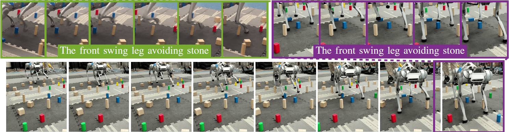

International Conference on Intelligent Robots and Systems (IROS 2024)
Xiaoyu Huang (1)Qiayuan Liao (1)Yiming Ni (1)Zhongyu Li (1)Laura Smith (1)Sergey Levine (1)Xue Bin Peng (2)Koushil Sreenath (1)
(1) University of California, Berkeley(2) Simon Fraser University

Abstract
This work presents HiLMa-Res, a hierarchical framework leveraging
reinforcement learning to tackle manipulation tasks while performing
continuous locomotion using quadrupedal robots. Unlike most previous
efforts that focus on solving a specific task, HiLMa-Res is designed
to be general for various loco-manipulation tasks that require
quadrupedal robots to maintain sustained mobility. The novel design
of this framework tackles the challenges of integrating continuous
locomotion control and manipulation using legs. It develops an
operational space locomotion controller that can track arbitrary
robot end-effector (toe) trajectories while walking at different
velocities. This controller is designed to be generic to different
downstream tasks, and therefore, can be utilized in high-level
manipulation planning policy to address specific tasks. To
demonstrate the versatility of this framework, we utilize HiLMa-Res
to tackle several challenging loco-manipulation tasks using a
quadrupedal robot in the real world. These tasks span from
leveraging state-based policy to vision-based policy, from training
purely from the simulation data to learning from real-world data.
In these tasks, HiLMa-Res shows better performance than other
methods.
@inproceedings{
2024-IROS-HiLMa-Res,
title = {HiLMa-Res: A General Hierarchical Framework via Residual RL for Combining Quadrupedal Locomotion and Manipulation},
author = {Huang, Xiaoyu and Liao, Qiayuan and Ni, Yiming and Li, Zhongyu and Smith, Laura and Levine, Sergey and Peng, Xue Bin and Sreenath, Koushil},
booktitle = {2024 IEEE/RSJ International Conference on Intelligent Robots and Systems (IROS)},
pages = {9050--9057},
year = {2024},
organization = {IEEE}
}